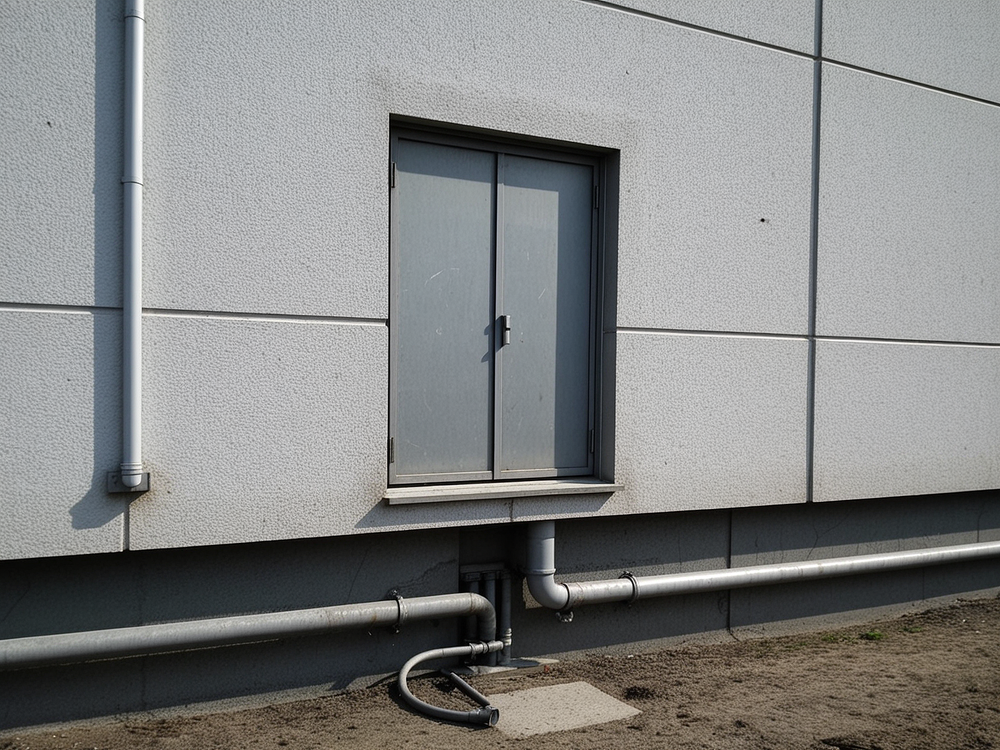
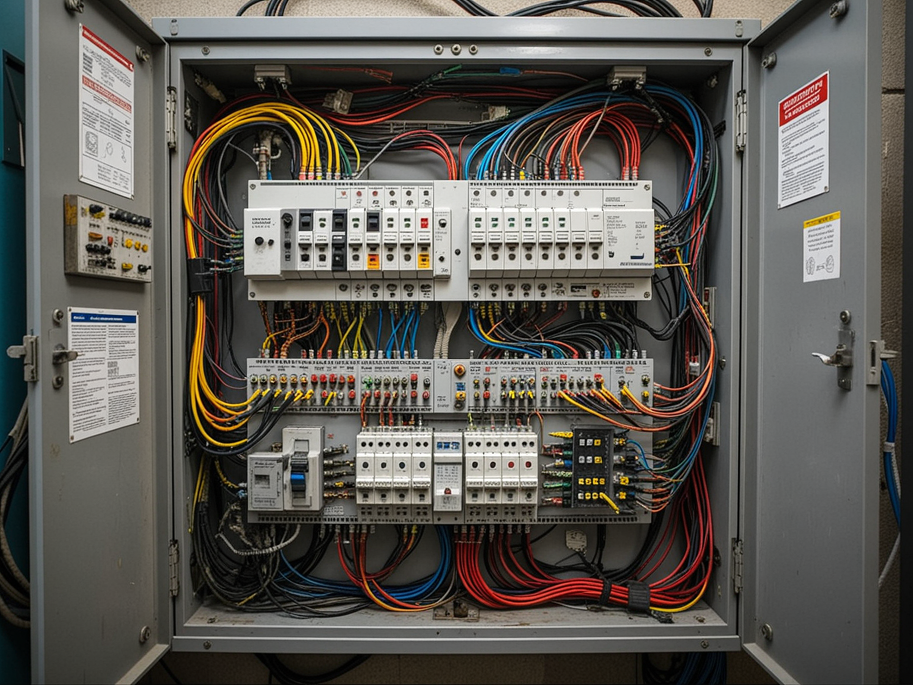
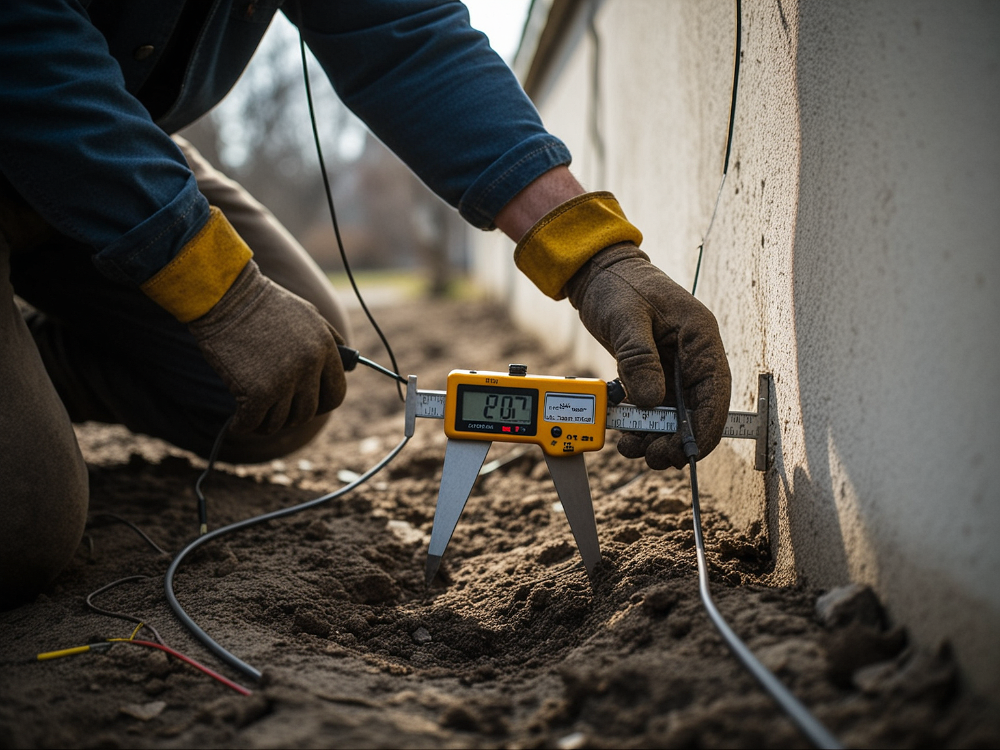

Lo mismo que el manual, pero en corto y por partes
El PDF original son párrafos largos, tablas apretadas y saltos bruscos. Aquí está reordenado en bloques que se leen en dos minutos cada uno, con lo importante señalado y los datos sueltos reunidos aparte.
Cada unidad tiene sus apartados y, al final, un test de 30 preguntas con corrección y explicación. Las diez primeras de cada test son las de la autoevaluación del manual. El progreso se guarda solo en tu navegador.
UD1 · Organización
Documentación, trámites, partes de la instalación, conductores y protecciones.
UD2 · Planificación
Emplazamientos, Gantt y PERT, medios auxiliares, trabajos sin tensión.
UD3 · Verificación
Instrumentos, medidas, normativa y prevención de riesgos.
Índice
- Unidad 1 · Organización de proyectos de obraDocumentación
- Unidad 2 · Planificación del montajeProgramación y seguridad
- Unidad 3 · Medidas y verificacionesInstrumentos y norma
- Mazo de cifras43 tarjetas
- Repaso espaciado e interrogatorioRecall
- Plan de 7 díasPrograma
Cómo se estudia esto de verdad
- No releas: pregúntate. Releer da sensación de dominio. Recuperar de memoria es lo que fija.
- Empieza por el test, no por el tema. Fallar duele y se recuerda.
- Usa el mazo de cifras todos los días. Es el 40 % de las respuestas correctas.
- Dibuja de memoria la cadena de la instalación en un folio.
- Explícalo en voz alta. Si no puedes explicar por qué protege un diferencial y no un magnetotérmico, todavía no lo sabes.
UD1 · Organización de proyectos de obra
Una instalación no empieza por el cable: empieza por el papel. Esta unidad es un catálogo de documentos, trámites y criterios de diseño.
La cadena de la instalación
El recorrido de la energía es fijo y no se altera. Si en un test aparece la derivación individual antes de la línea general, está mal.

Dimensionado de la derivación individual
La derivación individual va del contador a la vivienda. Es de un solo usuario y no puede alimentar a dos. Estos mínimos son de la ITC-BT-15.
| Concepto | Valor mínimo o máximo |
|---|---|
| Sección del cable | 6 mm² como mínimo |
| Diámetro del tubo | 32 mm como mínimo |
| Cajas de registro precintables | Cada 15 m como máximo |
| Cortafuegos en el recorrido | Cada 3 plantas |
| Tubos de reserva | 1 por cada 10 derivaciones |
| Caída de tensión | 3 % en alumbrado y 5 % en otros usos |
6 mm² es la sección mínima, no la que se elige siempre. La sección real sale de la potencia y de la caída de tensión admitida.
En el nicho de la CGP caben como máximo dos cajas.
Protección de las personas: dos frentes
| Contacto | Qué es | Cómo se evita |
|---|---|---|
| Directo | Tocar una parte activa en tensión | Aislamiento, barreras, envolventes, alejamiento, MBTS |
| Indirecto | Tocar una masa puesta en tensión por un fallo | Puesta a tierra + diferencial, doble aislamiento, separación de circuitos |
El diferencial cubre los dos frentes: es protección complementaria frente a los directos y principal frente a los indirectos.
Diferencial máximo de 30 mA para protección de personas.
El magnetotérmico no protege a las personas: corta por sobrecarga y cortocircuito.
Puesta a tierra
Su función es mantener las masas a un potencial parecido al del suelo y dar salida a las corrientes de defecto, para que el diferencial pueda actuar.
La resistividad del terreno es la clave: cuanto más baja, mejor tierra. Pizarra y arcilla conducen; granito y roca no.
Tierra buena = terreno blando y húmedo. Tierra mala = roca.
Proyecto o Memoria Técnica de Diseño
| Instalación | Proyecto |
|---|---|
| Pública concurrencia, quirófanos, riesgo de incendio o explosión, piscinas, locales mojados de gran superficie | Siempre, sin límite de potencia |
| Vivienda unifamiliar | Desde 50 kW |
| Resto de locales | Desde 20 kW |
El proyecto lo redacta un técnico competente. La MTD la firma el instalador autorizado.
Pública concurrencia sin límite de potencia es la pregunta que más se falla.
Documentación de obra
- Proyecto: memoria, planos, pliego de condiciones y presupuesto.
- Estudio de seguridad y salud: lo redacta el técnico competente; obligatorio con proyecto.
- Plan de calidad: control de recepción, de ejecución y de la instalación terminada.
- Certificado de instalación (boletín): se presenta para legalizar ante la comunidad autónoma.
El marcado CE lo pone el fabricante; el director técnico solo verifica que el producto lo lleva. Las instalaciones con proyecto pasan inspección inicial por un Organismo de Control Autorizado (OCA) antes de la puesta en servicio.
Control de calidad comprueba que se cumple lo proyectado. Aseguramiento de la calidad es el sistema que garantiza que ese control existe y se documenta.
El control documental de los suministros exige documento de origen y hoja de suministro con etiquetado, certificado de garantía del fabricante y documentos de conformidad o autorizaciones administrativas.
El marcado CE indica que el producto cumple normas armonizadas o guías DITE, que se ha superado la evaluación de la conformidad y que el fabricante responde de su colocación. Las letras CE no bajan de 5 mm.
Cuando el marcado CE no es exigible se acepta por otra vía: conformidad a norma, DIT, certificación reglamentaria, sello INCE-AENOR, ensayo de laboratorio acreditado o certificado del fabricante. El certificado CE de conformidad no sirve aquí.
Rendimientos y planificación previa
Los rendimientos son horas de operario por unidad de obra, de las bases de precios autonómicas.
Tres y a la vez: calidad según la documentación técnica, plazo pactado y precio contratado.
Conductores, colores y empalmes
| Conductor | Color normalizado |
|---|---|
| Fase | Marrón, negro o gris |
| Neutro | Azul |
| Protección | Verde y amarillo (uso exclusivo) |
La tensión nominal de una vivienda es 230 V entre fase y neutro y 400 V entre fases.
La sección del conductor de protección se deduce de la de fase.
| Sección de fase | Sección de protección |
|---|---|
| Hasta 16 mm² | La misma que la fase |
| De 16 a 35 mm² | 16 mm² |
| Más de 35 mm² | La mitad de la sección de fase |
Los empalmes se hacen siempre en cajas de derivación accesibles. Dentro del tubo no se empalma nunca.
Sobreintensidades y sobretensiones
| Fenómeno | Qué es | Qué lo protege |
|---|---|---|
| Sobrecarga de uso | Más consumo del previsto durante tiempo prolongado | Magnetotérmico o fusible |
| Cortocircuito | Contacto directo entre fase y neutro o entre fases | Magnetotérmico o fusible, con poder de corte suficiente |
| Sobrecarga transitoria | Pico breve por maniobra o arranque | Curva adecuada del automático |
La sobretensión transitoria es un pico de tensión por rayo o maniobra. Se combate con un protector contra sobretensiones aguas arriba del IGA.
Sobrecarga y cortocircuito son sobreintensidades. La sobretensión no: es tensión, no corriente.
Alumbrado de seguridad
| Tipo | Iluminancia mínima | Duración | Dónde |
|---|---|---|---|
| Evacuación | 1 lux en el suelo; 5 lux junto a cuadros y equipos de extinción | 1 hora | Recorridos de evacuación, cambios de dirección, salidas, escaleras |
| Antipánico | 0,5 lux hasta 1 m de altura | 1 hora | Locales con 100 personas o más; sótanos desde 50 |
| Zonas de alto riesgo | 15 lux o el 10 % del normal, el mayor | 1 hora | Zonas peligrosas |
| Reemplazamiento | El mismo nivel que el normal | 2 horas en hospitalización | Quirófanos, urgencias, paritorios |
La conmutación es automática, al fallar o al bajar la tensión al 70 %. Luminarias a 2,25 m de altura mínima y a no más de 15 m entre puntos.
En una vivienda unifamiliar no es obligatorio el alumbrado de evacuación.
Atmósferas explosivas
| Clase | Sustancia | Zonas |
|---|---|---|
| Clase I | Gases, vapores o nieblas | Zona 0 permanente, zona 1 ocasional, zona 2 puntual |
| Clase II | Polvo inflamable | Zona 20 permanente, zona 21 ocasional, zona 22 puntual |
Categoría I para zonas 0 y 20, II para 1 y 21, III para 2 y 22. Base: RD 400/1996 y UNE-EN 60079-14.
Clase II es polvo, no gas. Un silo de trigo es Clase II, zona 21.
Autoevaluación de la UD1
30 preguntas. Las diez primeras son las de la autoevaluación del manual.
UD2 · Planificación del montaje en edificios de viviendas
Cómo se coloca cada elemento, cómo se ordena el tiempo con herramientas de programación y cómo se trabaja sin accidentes.
Emplazamiento: cada cosa en su cota
El emplazamiento de las instalaciones de enlace debe ser registrable, accesible y fácilmente reparable: tiene que poder localizarse, llegarse a él y sustituirse lo que falle sin obras de albañilería.
La línea general de alimentación no es de cada usuario. Una sola LGA puede alimentar toda una centralización de contadores, y de ahí salen las derivaciones individuales.
| Elemento | Dónde |
|---|---|
| CGP | Nicho en el límite público/privado, máximo 2 por nicho; puerta con IK 10 y parte inferior a 30 cm del suelo |
| LGA y DI | Solo por zonas comunes; nunca por el interior de una vivienda ajena |
| Contadores | 1,10 m libres delante; lectura por debajo de 1,80 m; hasta 16 por armario y local obligatorio desde 17 |
| Cuadro general | Junto a la puerta de entrada, entre 1,4 y 2 m; en locales comerciales, mínimo 1,0 m; nunca en baño, aseo ni dormitorio |

DI: tubo ≥32 mm, cable ≥6 mm², registro precintable cada 15 m, cortafuegos cada 3 plantas, 1 tubo de reserva por cada 10 derivaciones.
2,20 m está fuera del rango 1,4-2 m: es una altura incorrecta para un dispositivo de mando y protección.
Herramientas de programación
Los factores que intervienen al planificar son la definición de actividades, su fecha de inicio y de finalización y la duración de cada tarea. El presupuesto, la firma del contrato o la situación del proyecto condicionan, pero no son factores de planificación.
Cronograma
Fija inicio, duración y fin de cada tarea. Es la base de todo lo demás.
Gantt
Barras horizontales, tiempo en el eje X. Muy visual, pero se vuelve ilegible al replanificar y no analiza alternativas ni costes.
PERT / CPM
Red de nodos y flechas. Es la única herramienta que define y calcula el camino crítico y las holguras.
PDM y ADM
Variantes de red. PDM pone la actividad en el nodo y admite cuatro tipos de precedencia; ADM usa la flecha como actividad.
El camino crítico solo existe en PERT. En el cronograma y en el Gantt no se calcula.
Duración esperada en PERT: t = (a + 4m + b) / 6, con a optimista, m más probable y b pesimista.
Recursos y holguras
La holgura es el retraso que admite una actividad sin mover la fecha final. Las del camino crítico tienen holgura cero.
Los problemas de asignación de recursos vienen de la experiencia y el rendimiento de cada operario: dos personas no rinden igual ni cometen los mismos errores. Por eso se asignan primero las tareas críticas a quien está acreditado para ellas.
La sobreasignación se corrige nivelando (retrasar tareas no críticas dentro de su holgura) o equilibrando la plantilla.
Medios auxiliares
- Borriquetas: hasta 3 m sin arriostrar, hasta 6 m arriostradas; separación entre apoyos no mayor de 3,50 m; plataforma de 60 cm de ancho mínimo.
- Estabilidad: alto/ancho menor de 5 en andamios fijos y menor de 4 en móviles. Ruedas frenadas y nunca se desplaza con gente encima.
- Escaleras: a 75°, nunca más de 5 m, una sola persona, 1 m por encima del punto de apoyo.
- Plataformas elevadoras: barandilla de 0,90 m (pretil de 1,10 m según UNE-EN 280), arnés anclado y estabilizadores desplegados.
- Herramienta eléctrica: doble aislamiento o toma de tierra, siempre con diferencial de 30 mA.
Trabajar sin tensión: las cinco etapas
Orden obligatorio y siempre completo. Al reponer, en sentido inverso.
- Desconectar con corte visible.
- Asegurar contra la realimentación (bloqueo y candado).
- Verificar la ausencia de tensión.
- Poner a tierra y en cortocircuito.
- Proteger y señalizar la zona.
DAVP+S. Si te saltas una, el procedimiento es nulo.
Locales especiales y volúmenes
Húmedos (IPX1), mojados (IPX4), polvorientos (IP5X), piscinas y baños por volúmenes 0 a 3.
Montaje, mantenimiento y disponibilidad
Montar bien es la primera medida de mantenimiento. Una instalación ordenada, accesible y bien rotulada abarata el mantenimiento y el uso; una mal ejecutada los encarece durante toda su vida.
Tres propiedades guían el diseño:
| Propiedad | Qué mide |
|---|---|
| Mantenibilidad | Facilidad de conservar la instalación en estado de servicio. Exige accesibilidad y documentación. |
| Flexibilidad | Facilidad de modificar y ampliar para adaptarse a nuevas necesidades. Exige reservas. |
| Disponibilidad | Proporción de tiempo en servicio: D = MTBF / (MTBF + MTTR) |
Un buen uso y mantenimiento de los dispositivos disminuye los costes directos e indirectos: menos averías, menos paradas y menos reparaciones.
Autoevaluación de la UD2
30 preguntas. Las diez primeras son las de la autoevaluación del manual.
UD3 · Medidas y verificaciones
Demostrar con instrumentos y con norma que lo instalado es seguro.
Magnitudes, resistividad y electrodos
| Magnitud | Instrumento | Cómo se conecta |
|---|---|---|
| Tensión | Voltímetro | En paralelo |
| Intensidad | Amperímetro o pinza | En serie (la pinza, abrazando el conductor) |
| Resistencia | Óhmetro | Sin tensión |
| Aislamiento | Megóhmetro | Sin tensión, a 500 V |
| Resistencia de tierra | Telurómetro | Tres picas, sin tensión |
La resistividad es la resistencia eléctrica específica de cada material a oponerse al paso de la corriente. No es la resistencia de un conductor concreto: es la del material, y por eso se mide en ohmios por metro.
La resistencia de un electrodo de puesta a tierra depende de dos cosas: de su forma y de la resistividad del terreno donde se clava. Cuanta más superficie de contacto y mejor terreno, menos ohmios.
Óhmetro y megóhmetro siempre sin tensión.
V = I · R P = V · I
Instrumentos de aislamiento
- Megóhmetro: mide resistencia de aislamiento a 500 V, sin tensión.
- Medidor de corrientes de fuga: comprueba la eficiencia del aislamiento midiendo la fuga real, de forma no invasiva y con la instalación en servicio.
- Comprobador de diferenciales: verifica sensibilidad y tiempo de disparo.
Verificaciones reglamentarias
Antes de nada: inspección visual, comprobar que la instalación está sin tensión y descargar condensadores.
- Continuidad de los conductores de protección, sin tensión.
- Resistencia de aislamiento, con megóhmetro a 500 V.
- Resistencia de puesta a tierra: menos ohmios es mejor tierra.
- Sensibilidad y tiempo de disparo de los diferenciales.
- Polaridad.
En un circuito monofásico el ensayo de aislamiento se realiza entre los conductores activos y el conductor de protección, y también entre los activos entre sí.

Continuidad: cómo se lee
Al medir continuidad, un valor de resistencia casi cero significa que la corriente pasa sin obstáculo: la continuidad es muy buena. Un valor alto o infinito indica corte o mal contacto.
En continuidad, cero es bueno. En aislamiento, cero es malo. No se leen igual.
Inspección, revisión y planes de seguridad
La inspección ocular comprueba, entre otras cosas, que existen los esquemas de los circuitos de los cuadros y las placas de identificación de los cuadros y del instalador. Las dos cosas.
Una revisión resulta favorable cuando no se detecta ningún defecto muy grave ni grave. Los leves no la invalidan, se corrigen después.
La integración de la actividad preventiva significa que la prevención no es un departamento aparte: afecta a todos los componentes de la empresa y a cualquier acto de trabajo.
| Plan de seguridad | Quién |
|---|---|
| Lo aprueba | El Coordinador de Seguridad y Salud |
| Con varios contratistas | Cada contratista elabora su propio plan |
Normativa aplicable
- REBT y sus instrucciones técnicas complementarias.
- Normas UNE y CENELEC.
- Normativa autonómica y ordenanzas municipales.
- Normativa ambiental.
- Ley de Prevención de Riesgos Laborales y RD 614/2001.
Prevención: EPI y EPG
EPI: guantes aislantes, pantalla facial, casco con barbuquejo, ropa ignífuga, arnés. EPG: puestas a tierra y en cortocircuito, pantallas aislantes, señalización, barreras.
La puesta a tierra y en cortocircuito es EPG, no EPI.
EPI = Individual. EPG = Grupal.
Autoevaluación de la UD3
30 preguntas. Las diez primeras son las de la autoevaluación del manual.
Mazo de cifras
Todo lo que en este temario es un número, en tarjetas. Pulsa para ver la respuesta y valórate sin trampas.
Repaso espaciado e interrogatorio
Cinco cajas: lo que aciertas sube y tarda más en volver; lo que fallas cae a la caja 1 y vuelve en la misma sesión.
Pendientes hoy
0 tarjetas del mazo toca repasar.
Dominadas
0 tarjetas en caja 4 o 5.
Interrogatorio
Preguntas de test al azar de las tres unidades.
Cómo funciona la programación
| Caja | Si aciertas | Si fallas | Vuelve en |
|---|---|---|---|
| 1 | Sube a 2 | Se queda en 1 | Misma sesión |
| 2 | Sube a 3 | Baja a 1 | 1 día |
| 3 | Sube a 4 | Baja a 1 | 3 días |
| 4 | Sube a 5 | Baja a 1 | 7 días |
| 5 | Se queda en 5 | Baja a 1 | 21 días |
Plan de 7 días
Siete días, tres bloques de 25 minutos al día y un repaso corto antes de dormir.
Nunca dos días seguidos sin abrir el mazo. Aunque solo sean cinco minutos.
Al terminar
- Repite los tres tests en seco hasta pasar de 26/30 en cada uno.
- Reproduce la cadena de la instalación y las cinco etapas sin mirar.
- Deja el mazo en cero pendientes antes de presentarte.
Subrayar con cinco colores, leer en voz baja dos veces y empezar por el glosario.